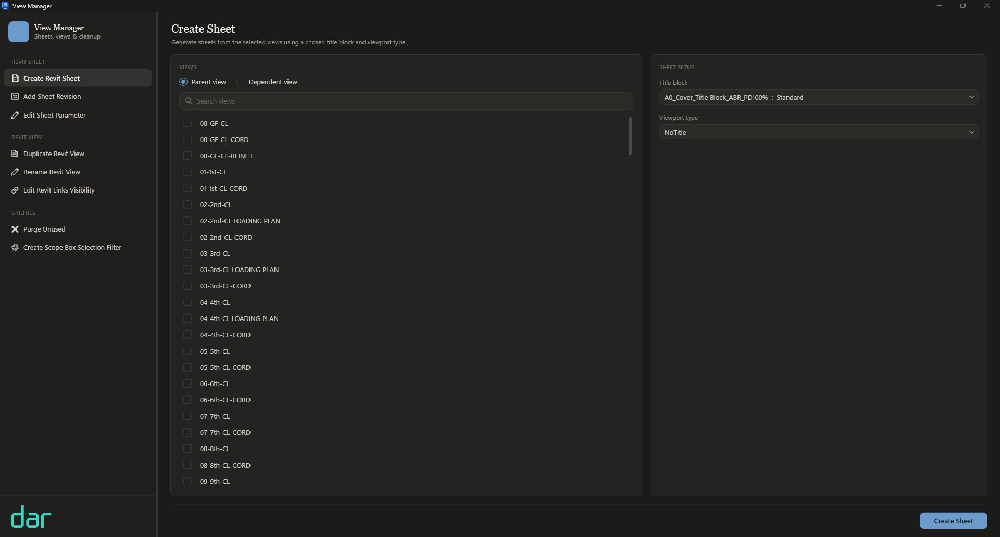
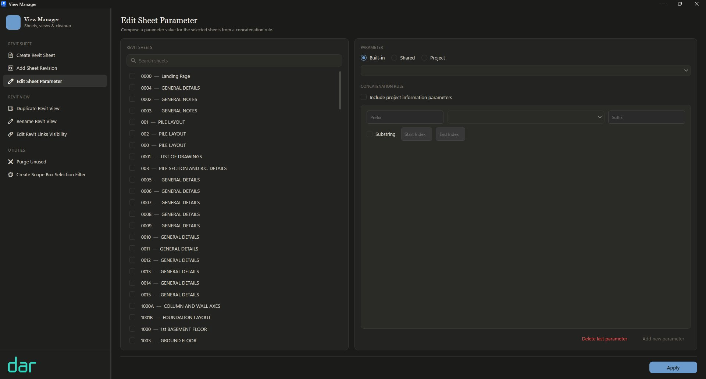
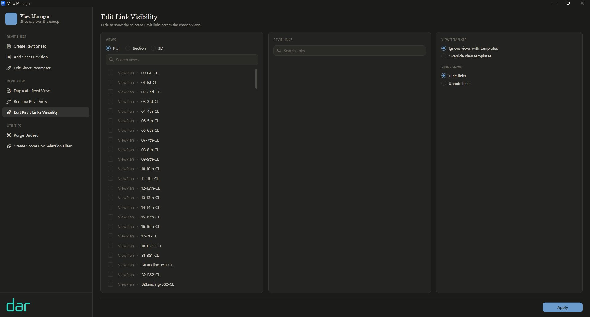
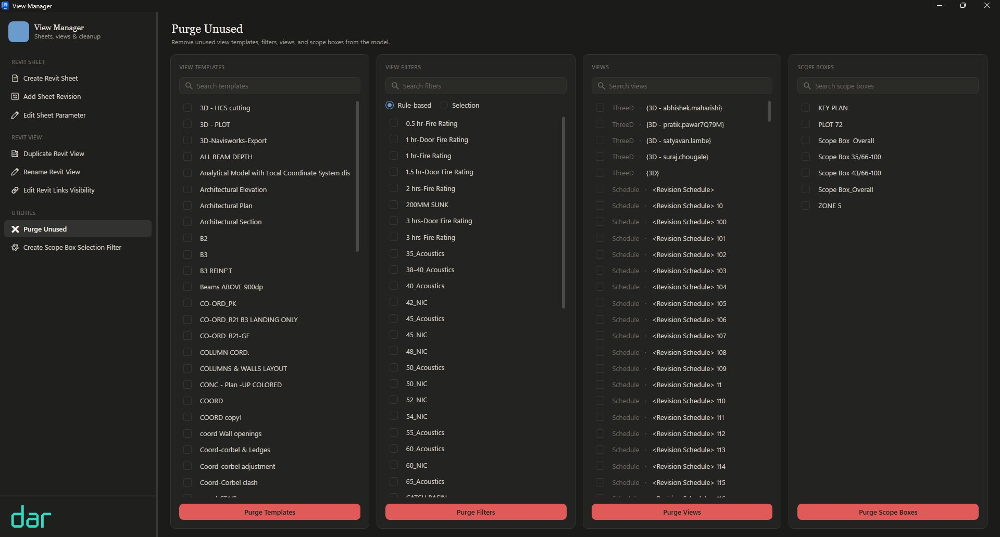

View Manager batches the slowest parts of Revit documentation — creating sheets, stamping revisions, composing parameters, wrangling views and links, and purging what the model no longer needs.
This page is organised like the sets it produces. Every section carries a sheet number — jump straight to the one you need.
| No. | Title | Contents |
|---|---|---|
| 0002 | Module index | All eight modules at a glance, grouped as they appear in the app. |
| 0100 | Revit Sheet | Create sheets, add revisions, compose sheet parameters. |
| 0200 | Revit View | Duplicate, rename, and control link visibility across views. |
| 0300 | Utilities | Purge unused elements and build scope-box selection filters. |
| 0400 | Get access | Install path and rollout notes for Dar staff. |
Everything lives in a single window. The groups below mirror the app's navigation — what you see here is what you get there.
Sheet production is the most repetitive work in a Revit project. These three modules turn it into selection plus one click.
Pick the views, pick the title block, pick the viewport type — View Manager creates a sheet per view and places the viewport for you. Works with parent and dependent views alike.

Issuing a revision across a 200-sheet set shouldn't mean opening 200 sheets. Select the sheets, select the revision, apply once.
Compose a parameter value for many sheets from a concatenation rule instead of typing it sheet by sheet. Build the value from a prefix, a source parameter, and a suffix — optionally slicing the source with a substring.

View housekeeping at batch scale — duplication, naming, and link visibility without per-view surgery.
Select any number of views and duplicate them in one operation — the setup step for coordination sets, markup copies, and discipline-specific variants.
Apply consistent naming across a batch of views in a single pass — no double-click-rename loops, no drifting conventions between floors.
Hide or show selected Revit links across any set of views — plans, sections, or 3D — and decide explicitly how view templates are treated instead of fighting them.

Model hygiene. Old templates, orphaned filters, abandoned working views — the weight a long project accumulates.
Four columns, four categories: view templates, view filters, views, and scope boxes. Search each, select what goes, and purge per category — surgical, not scorched-earth.

Generate selection filters from the model's scope boxes, making zone-based selection a saved, reusable action instead of a manual ritual.
View Manager is an internal Dar tool by the Computational Design Team. Copy the path below and run the installer from the shared drive.
K:\Dar_Cads\General\Computational Design Team\Setup\DarTools 2\Version 2.0.0
Requires Autodesk Revit. Questions, bugs, and feature requests go to the Computational Design Team.